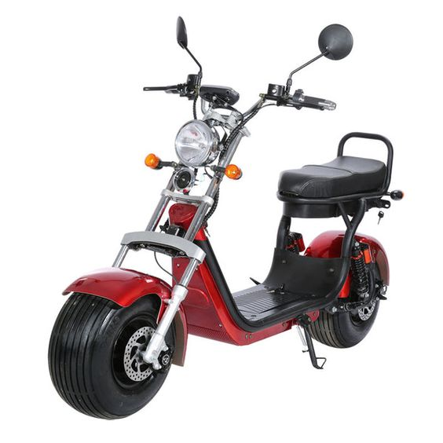
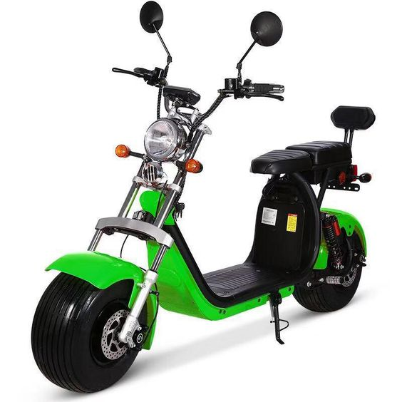
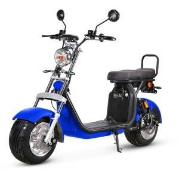
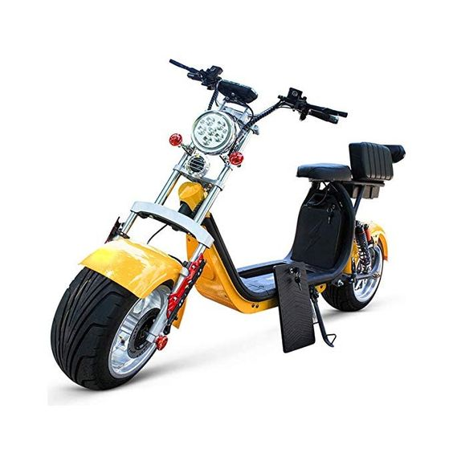
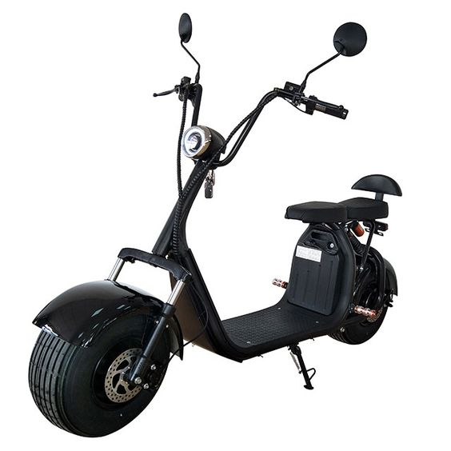

QUE TAL COMPRAR UMA SCOOTER ELÉTRICA?
TEMOS VÁRIAS OPÇÕES, SEGUE OS MODELOS MAIS VENDIDOS NO BRASIL!





O que é Scooter Elétrica?
As Scooters elétricas são veículos de duas ou três rodas, movidas à energia elétrica por meio de uma bateria recarregável.
Estes veículos não utilizam nenhum tipo de combustível fóssil (gasolina, etanol ou diesel) no motor, ou seja, são veículos não-poluentes.
Uma série de modelos de scooters elétricas no Brasil - os de duas rodas, também conhecidos como patinetes elétricos; e os de três rodas, chamados de triciclos elétricos.
Embora cada modelo tenha sua particularidade, todos eles têm o mesmo objetivo: contribuir para um trânsito mais sustentável, com mais agilidade. Além de, claro, proporcionar elegância e conforto ao cliente.
Detalhe importante sobre a scooter elétrica é o seu baixo consumo e custo de manutenção. Com uma carga completa da bateria, uma scooter elétrica da Gloov pode rodar com até 50 km de autonomia, dependendo do modelo.